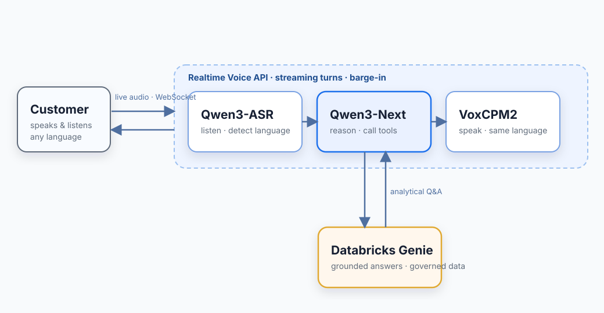
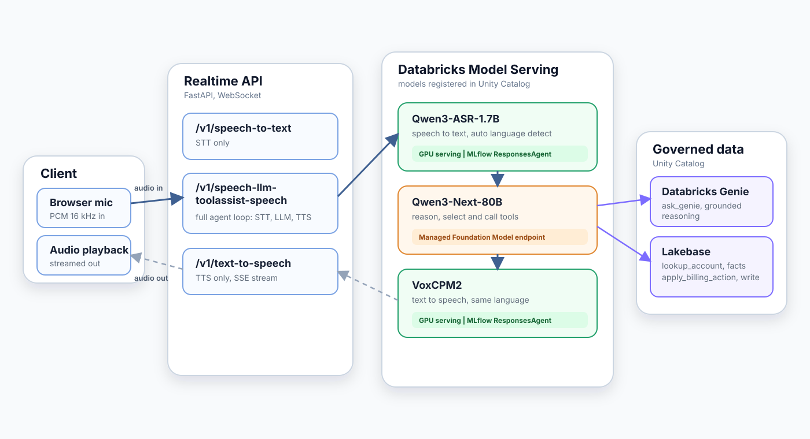
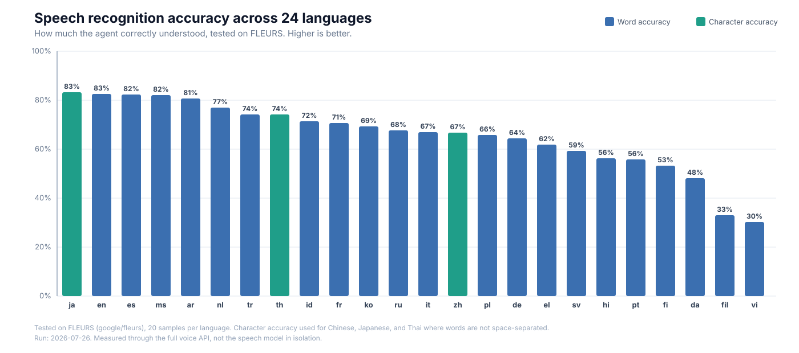

Powering Genie with Open-Source Voice Models on Databricks
In a previous post we explored why building voice models for Asian languages is hard — the tonal systems, the script diversity, the lack of training data. This post is about what we did next: we took open-source models that handle those languages and wired them into Databricks Genie, so a customer can call in their own language and get a grounded answer from Unity Catalog data, spoken back to them.
Two developments changed that. First, open-source speech models now cover broad language sets in a single checkpoint — Qwen3-ASR recognizes ~30 languages and VoxCPM2 synthesizes ~30 — removing the need for a separate commercial service per language. Second, the entire voice stack runs on Databricks: the reasoning model (Qwen3-Next) is available as a managed Foundation Model API endpoint, and we deployed the two speech models ourselves on GPU Model Serving. Everything sits next to Genie and the governed data, not in a third-party cloud.
What that looks like in practice: a caller phones in and speaks Thai. The agent transcribes the request, looks up the account, offers to waive a late fee, applies the waiver once the customer agrees, and answers a follow-up analytical question by querying Genie — all spoken back in Thai. No language selection menu. No handoff to a different service.
This post walks through how we assembled these models into a live conversation, how we deployed them on Databricks, and what we measured. The models are used as released — no fine-tuning.
Key Highlights
- Qwen3-ASR recognizes speech in ~30 languages with automatic language detection; VoxCPM2 synthesizes the reply in the same language.
- Qwen3-Next reasons over the transcript, calls tools to act on the account, and queries Databricks Genie for grounded answers over governed data.
- End-of-turn is detected semantically — Silero VAD as a speech gate plus smart-turn v3 as a completeness model — so the agent replies ~0.3s after the caller finishes, not on a fixed silence timer.
- The conversation runs over a WebSocket API exposing three capabilities: speech-to-text, a full speech-to-speech agent loop, and text-to-speech.
- The two speech models are packaged as MLflow
ResponsesAgentendpoints, registered in Unity Catalog, and served on GPU Model Serving. The reasoning model is consumed as a managed Foundation Model API endpoint. - Quality is measured end-to-end on public multilingual datasets (FLEURS, 2M-Belebele, CCFQA) against baselines like Whisper large-v3.
Why Genie Needs a Voice
Genie already reasons over governed data — it can answer "which accounts have overdue invoices above $5,000?" by querying Unity Catalog tables directly. But today, a customer can only reach that reasoning through a typed question in a browser. On a live phone call, the conversation needs more:
- Multilingual recognition that preserves business entities — the invoice number, the dollar amount, the account name — in whatever language the caller speaks.
- Grounded actions over real data. Genie answers the analytical questions (e.g., "what's my outstanding balance?"). But the agent also needs to *act* — look up the account, waive a fee, confirm an action only once it actually succeeds — against governed operational data in Lakebase.
- Sub-second turn-taking. A browser query can take seconds. A voice call cannot — the customer is waiting in silence. Every component must be fast enough to sustain a natural conversation.
- Self-governed infrastructure. The enterprise must control the models and the data path — no audio leaving the platform, no third-party transcription service sitting between the customer and the governed tables.
How a Live Conversation Works

Audio streams both ways over a WebSocket, one turn at a time. Here's what happens in a single turn of the Thai billing call:
- The customer speaks — and the agent knows when they're done. Their audio streams into the API, where a lightweight speech gate (Silero VAD) confirms real speech and a semantic end-of-turn model (smart-turn v3) judges, at each pause, whether the sentence is actually complete. The turn finalizes about 0.3 seconds after the caller genuinely stops — not on a fixed timer — so the agent neither cuts them off mid-thought nor leaves them waiting.
- Qwen3-ASR recognizes the speech. It detects that the language is Thai, transcribes the request, and returns the detected language tag so that every subsequent stage follows the caller's language. The invoice number is preserved.
- Qwen3-Next reasons and acts. It interprets the transcript and calls the appropriate tool: an account lookup for balances and overdue invoices, a billing action to waive a fee once the customer agrees, or a Genie query when the question is analytical and requires reasoning over governed data. The model is instructed to act rather than narrate — it performs the action and states the result in a single turn.
- VoxCPM2 synthesizes the reply in Thai, streaming the audio in short segments so playback begins before the sentence has finished generating. If the customer speaks over the reply, barge-in stops playback.
When the caller asks something the account lookup can't answer — "what's my average monthly spend this year?" — Qwen3-Next routes it to Genie, which queries the governed tables and returns a grounded answer. That answer gets spoken back in Thai.
The Realtime API
The conversation isn't a single model call — it's a session over a WebSocket, with three API capabilities you can use independently or together:
/v1/speech-to-text— stream audio in and receive the final transcript with the detected language./v1/speech-llm-toolassist-speech— the complete agent loop: audio in, transcript, reasoning with tools, and synthesized speech out. This capability carries the conversation./v1/text-to-speech— stream text in and receive synthesized speech out.
The loop is turn-based, not a continuous duplex stream. A Databricks Model Serving endpoint answers one request at a time and can stream its *output* back over server-sent events (SSE), but it does not hold an open bidirectional audio socket the way a dedicated real-time service like Deepgram does.
What that means in practice: recognition is not word-by-word. Once end-of-turn is detected, the caller's full utterance is transcribed in a single request. The reply is generated in full, and only the synthesized audio streams back — in ~80ms segments over SSE — so playback begins before synthesis finishes. The API also supports barge-in (the caller can interrupt) and pre-generates a brief spoken acknowledgment so that slower, tool-heavy turns are covered by a response rather than silence.
"Real-time," here, means responsive turn-taking with low-latency streamed audio out — not incremental recognition or token streaming.
Choosing the Models
We needed three models — recognition, reasoning, and synthesis — and picked each for a different reason.
Recognition — Qwen3-ASR-1.7B. The hardest stage: it has to get invoice numbers, amounts, and names right in a language nobody told it to expect. Qwen3-ASR covers ~30 languages in one checkpoint and auto-detects the spoken language, handing back the tag so the rest of the turn follows the caller. The obvious alternative — a commercial recognizer per language — means a new service and uneven coverage for every market. One model, one endpoint, same behavior everywhere.
Synthesis — VoxCPM2. Speaks ~30 languages from a single model, clones a reference voice so the agent keeps one voice for the whole call, and streams audio in short segments so it starts talking almost immediately. One catch worth stating plainly: the languages the product *actually* supports are the intersection of what both models handle — a model card's language count is not a conversation.
Reasoning — Qwen3-Next-80B. Here latency and control outweighed raw quality. Across English, Thai, Indonesian, and Chinese it answered in ~1.17s at the median, with reliable tool-calling and the generation controls the pipeline needs; a stronger frontier model (Claude Sonnet) was roughly twice as slow and rejected those controls. Tool-calling isn't optional — it's how the agent looks up accounts, applies billing actions, and reaches Genie.
Serving on Databricks
All three models run on Databricks — but they got there two different ways. Use the managed path where it exists; deploy from open source where it doesn't.
The managed path — Qwen3-Next. It is available as a Foundation Model API endpoint on Databricks, so we just point at it. Nothing to size, warm, or scale, and it's billed per request.
The self-served path — Qwen3-ASR and VoxCPM2. Neither has a managed option, so we deployed them ourselves with a repeatable pipeline that runs on serverless compute:
- Package. Download the open-source checkpoint from Hugging Face and wrap it in an MLflow
ResponsesAgent. MLflow infers the fixedagent/v1/responsessignature, so Model Serving treats it as an agent endpoint: audio rides inside the request over the Responsescustom_inputs/custom_outputschannel, and synthesis streams its segments back over SSE. - Register. Log the model into Unity Catalog with pinned dependencies, then move a
candidatealias onto the new version — so promoting a model is an alias flip, not a rebuild. - Deploy. Create, or update, a GPU Model Serving endpoint pointed at the aliased version, on
GPU_MEDIUMwith scale-to-zero disabled.
One gotcha cost us real time: the GPU serving image ships a CUDA build the model wheels won't load against, so we pin the whole PyTorch stack (torch==2.7.1 on cu118, with a matching torchvision). Left unpinned, dependency resolution drifts to an incompatible wheel and inference fails at predict time with missing-operator errors — worth pinning from the start.
Keeping the GPUs warm. A fresh replica needs several inferences to reach steady-state latency, so scale-to-zero stays off and every endpoint is primed at startup. The first real customer turn lands fast, not slow.
One governance model. Whichever path a model takes, its endpoint is a Unity Catalog asset, so the voice layer inherits the same access control and lineage as Genie and the tables it reads. Nothing new to secure.
Architecture at a Glance

The diagram shows the full data path. A browser streams audio over a WebSocket to a FastAPI API. Inside each turn, the API drives the three models in sequence — transcribe, reason, synthesize — and streams audio back. The two speech models run on GPU Model Serving (packaged as MLflow ResponsesAgent); the reasoning model is a managed Foundation Model API endpoint. When Qwen3-Next needs to act, it calls tools against Lakebase (account lookups, billing actions) or Genie (analytical questions). Account changes go through the governed billing tool — the model proposes, the tool executes.
Benchmarks Across Languages
How well does the agent understand speech in each language? We tested on FLEURS, a standard multilingual speech dataset, across all 24 supported languages. Each bar shows the percentage the agent got right — taller bars mean better understanding.

Japanese, English, Spanish, Malay, and Arabic lead at 81–83%. Thai, Indonesian, and Chinese — the languages that carry the live demo — all land above 67%, strong enough to hold a real billing conversation. The tail (Vietnamese, Filipino) is where the model needs improvement and represents future fine-tuning targets.
Every model update triggers a fresh benchmark run, and results land in a Delta table — so we always know where each language stands before promoting a version to production.
Lessons Learned
Detecting when the caller is actually done speaking was the hardest problem we solved. On a phone call, people pause mid-sentence to think, take a breath, or look up a number. A simple silence timer can't tell the difference between a thinking pause and a finished sentence — it either cuts the caller off or leaves dead air while it waits for the timeout. We solved this with a two-stage pipeline that runs entirely on CPU (onnxruntime, no GPU cost): first, Silero VAD filters out background noise and confirms the caller is actually speaking; then smart-turn v3 listens to the audio at every pause and decides whether the sentence is linguistically complete — does it end on a question, a statement, or is the caller still mid-thought? The result: turns finalize ~0.3 seconds after the caller genuinely stops. No premature cutoffs in our validation set. Languages that smart-turn doesn't cover fall back to a calibrated pause rule, and if the models fail to load the system degrades gracefully to energy-based detection.
Perceived speed comes from the gaps between models, not from the models themselves. We spent weeks optimizing model inference — and it barely moved the needle on how fast the conversation *felt*. What actually mattered was everything that happens in the transitions: how quickly we detect end-of-turn (above), how soon the first audio byte reaches the caller's speaker (streaming synthesis starts playing in ~80ms via SSE before the full sentence is generated), whether the caller hears silence or a brief spoken acknowledgment while the agent calls tools, and whether a cold GPU endpoint is already warmed before the first real turn arrives. These systems-level choices — barge-in, endpoint priming, streamed first-byte — shaped the user experience more than any single model latency number.
Future Direction
- Genie Agent Mode — today the reasoning stage queries Genie once per turn, like asking a single question. With Agent Mode, Genie can investigate like an analyst — planning, testing hypotheses, and iterating across multiple queries to answer complex follow-ups without leaving the call. That's the natural next step: the caller asks "why did our churn spike in Q3?" and Genie reasons through it live.
- Telephony (8 kHz) — the current path is built for wideband browser audio (16 kHz+). Narrowband telephone audio degrades recognition quality and needs dedicated handling via a SIP gateway with acoustic echo cancellation.
- Fine-tuning on domain audio — the benchmark chart shows where the base model is weak. Targeted LoRA fine-tuning on enterprise call recordings for the tail languages is the next accuracy lever.
Sources and Further Reading
Open-source models
- Qwen3-ASR-1.7B — multilingual speech recognition with automatic language detection
- VoxCPM2 — multilingual, voice-cloning speech synthesis
- Qwen3-Next-80B-A3B-Instruct — reasoning and tool-calling
- Silero VAD — streaming voice-activity detection (speech gate)
- smart-turn v3 — audio-native semantic end-of-turn detection
Benchmark datasets and baselines
- FLEURS — multilingual read-speech recognition
- 2M-Belebele — spoken reading-comprehension (dataset)
- CCFQA — spoken factual question answering (dataset)
- Whisper large-v3 — recognition baseline
- SeamlessM4T — recognition baseline (cascaded with Llama-3-70B)
Databricks
- AI/BI Genie
- Introducing Genie Agent Mode
- Agent Framework
- Model Serving
- GPU Model Serving
- Foundation Model APIs
- Unity Catalog
- Lakebase — low-latency operational store for account facts and billing writes
Platform and tooling
- MLflow — model packaging and the
ResponsesAgentcontract - FastAPI — the realtime WebSocket API
- PyTorch — speech-model runtime on the GPU endpoints
- ONNX Runtime — CPU inference for the endpointing models
- Deepgram — dedicated real-time streaming speech API (referenced for contrast)